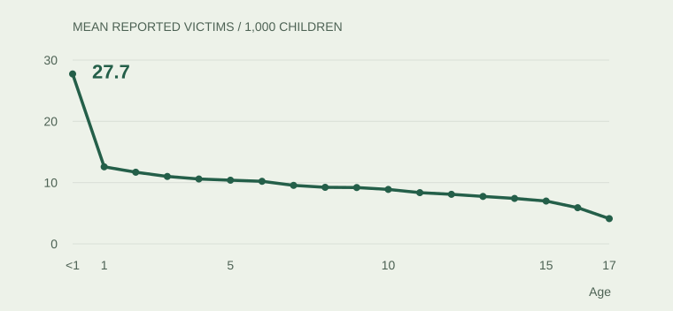
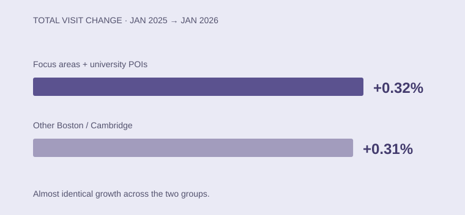

PUBLIC POLICY / SPRING 2026/01

R · Regression · Public data
Where age changes the story.
Reported child maltreatment across 52 jurisdictions. A regression study that makes room for the infant pattern.
Explore case studyTHE PROJECT INDEX
A selection of graduate coursework, with the methods, visual evidence, and limitations behind each conclusion.

R · Regression · Public data
Reported child maltreatment across 52 jurisdictions. A regression study that makes room for the infant pattern.
Explore case study
Tableau · Difference-in-differences
A Boston–Cambridge mobility comparison finds nearly identical growth in focus and comparison areas.
Explore case studyThese case studies summarize completed coursework, with methods and visual evidence presented directly on the site. Collaborators are credited where applicable.